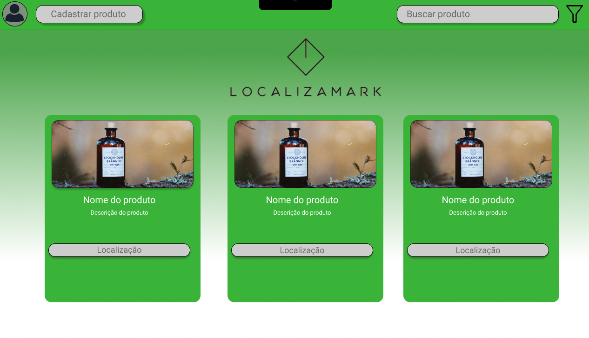

LocalizaMark

O projeto foi criado com a intenção de facilitar a economia de dinheiro para aposentados, estudantes e desmpregados. O LocalizaMark mapeia as promoções dos supermercados da região e envia os dados para o site. Foi usado SQL, JavaScript, HTML e CSS para a realização do projeto.